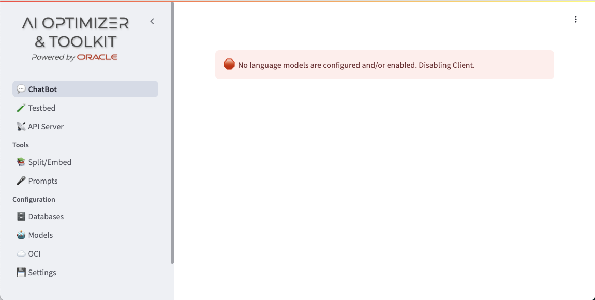

Set up and run AI Optimizer and Toolkit
A bootstrap guide for the tool

Intro
I have decided to create a series of pieces of content on how to use AI. And, since there is no better tool to play with AI than the AI Optimizer and Toolkit, I have chosen to start by explaining how to set it up and run it.
AI Optimizer and Toolkit is an Open Source project created by our team, the Microservices and AI Team. You can use Oracle's AI Optimizer and Toolkit to take your generative AI projects from prototype to production, independently of their size. Using generative AI to match your business needs is challenging and our software helps you to simplify and accelerate the process of developing AI-based tools. AI Optimizer and Toolkit allows you to:
- Quickly configure your model to meet your unique needs.
- Extend its knowledge to understand and work with your structured and unstructured business data.
- Automatically test its behavior with any new change.
- Generate a microservice with the results of your iterations that can be deployed to production.
This video will cover the following topics:
- I will start by briefly explaining how AI Optimizer and Toolkit works, so you get a better understanding of the pieces that are needed and how they play together.
- Then, I will go through the configuration of the different pieces, step by step. If you are using a Linux or a Window system, they are both covered in the documentation of the project itself. But, feel free to ping me in any of the social networks mentioned in the home page of this site.
- With all the dependencies up and running, I will show you how to run AI Optimizer and Toolkit.
- Finally, I will end up with a very brief recap.
Would you prefer to watch me following these instructions in the video? Then, here it is:
AI Optimizer and Toolkit
At the Microservices and AI team, we were very excited with all the possibilities and advantages that generative AI offers to companies and individuals, but we also were aware that an LLM isn't enough by itself to produce useful tools. You need to choose the proper model and adjust it to your needs. You also want to extend its knowledge and capabilities.
We wanted to contribute to this field and do it in a way that you can freely use and even contribute to if you feel inclined to do so. So the team created AI Optimizer and Toolkit, the no code open-source tool powered by Oracle that makes it easier than ever to bring your enterprise-level generative AI projects from prototype to production.
AI Optimizer and Toolkit connects to local or remote LLMs and offers you a chat interface. The tool allows you to modify the parameters of those models and to customize the prompts that you use. It also helps you with the whole ingestion process for RAG, from using an embedding model with each of the pieces of data, to store the data and the embedding using AI Vector Search in the Oracle Database 23ai. You can then use the model and its RAG capabilities and even perform automatic tests on it to assess the quality of the tool that you are creating. And, when you are happy with the results, you can generate a microservice that works with Java with Spring AI and that can be deployed to your production environment. You do all of those things from the web user interface without having to type any programming language code.
AI Optimizer and Toolkit is implemented in Python using a client-server architecture. The client is a front-end application that offers a web user interface to the user. The server is the core of the application and it provides a REST API that may be used by several clients.
The server uses LLMs and embedding models that run locally using Ollama and it's also OpenAI compatible, so you can also use remote LLMs and embedding models using OpenAI API interface. In both cases, it can directly work with their parameters and change the prompt to modify their behavior. And, it can use structured and unstructured data from an Oracle Database.
Set up
Prerequisites
Before we run and configure AI Optimizer and Toolkit, let's take care of some prerequisites.
We are going to need some tool to run containers in your system. Containers are a very convenient way of installing, running and disposing, when no longer needed, software in your system. You can use Podman, Rancher, Docker, or, as I already explained previously, Colima.
It isn't required, but it is quite useful, and more economical, to have Ollama running on your system. You can use your API keys to access AI providers, like OpenAI, instead or in combination with Ollama. If you use Ollama, you keep the privacy of your data because it doesn't go out to a third party. Also, it cannot be used to train future models, by the AI online service providers of those models.
Oracle Database 23ai is required only if your use RAG. But this is so useful and can improve the behavior of your tool so much, that you want to have it available.
As for running the AI Optimizer and Toolkit software, it requires exactly Python 3.11, neither older nor newer. If you are using a recent version of macOS, you will need to install that version side by side with the builtin one.
Installation
Now that I have explained all the required components, I am going to cover how to get them up and running in our system
Container runtime
Assuming that we already have a container runtime installed in your system –Colima, if you followed the article that I mentioned before,– the cautious system administrator should check that it is up and running. If you aren't a cautious, you should do it too, because it will save you some time and swearing 😄.
In your shell prompt, enter:
colima statusIf the runtime is running you should get something similar to this:
INFO[0000] colima is running using macOS Virtualization.Framework INFO[0000] arch: aarch64 INFO[0000] runtime: docker INFO[0000] mountType: virtiofs INFO[0000] socket: unix:///Users/jorge/.colima/default/docker.sock
But, if it isn't, you will get this instead:
FATA[0000] colima is not running
If your Colima isn't running, you need to start it. Assuming the required settings are already stored in the file as I explained in before, you just have to issue this command:
colima startLLM runtime
Although we have just started by having our container runtime ready, we don't want to run Ollama as a container in a Mac with Apple Silicon, because it won't be able to take advantage of the GPU. You can find more information on why this is the case in the references of this article. If you are using a amd64 system with a CUDA enabled GPU running Linux or Windows, you can use the container, but please take all the necessary steps to ensure that Ollama is using it.
If Ollama isn't installed in your macOS system already, you can use brew:
brew install ollamaThen, you can run Ollama as a service with:
brew services start ollamaOr, if you don't want/need a background service, you can just run:
/opt/homebrew/opt/ollama/bin/ollama serveWe are going to interact with some LLM models, so we need to install them in Ollama. We will start with llama3.1 as the main LLM and mxbai for computing the embeddings1:
ollama pull llama3.1
ollama pull mxbai-embed-large
If you also/instead want to run LLM models online, you will need the OPENAI_API_KEY to authenticate to OpenAI and use
their services.
Install and start Oracle DB 23ai
Oracle Database 23ai can be installed in a container and it will make our lives easier. But you can choose to run it in a different system or even in the Cloud. In this article, we are going spin up a container in our system:
The command is very simple:
docker run -d \
-p 1521:1521 \
-e ORACLE_PWD='0pen-S3sam3.' \
--name db-free \
--platform linux/arm64 \
container-registry.oracle.com/database/free:latest
You can use container management commands to check that it is running (docker ps, if you are using the Docker CLI with
Colima). The container is ready to be used when docker logs -f db-free shows the message: DATABASE IS READY TO USE!
Python
We will start by getting a copy of the source code for the project and go to its directory.
git clone https://github.com/oracle-samples/ai-optimizer.git
cd ai-optimizerAs I mentioned before, AI Optimizer and Toolkit requires exactly Python 3.11. You shouldn't use an older or newer version of Python. If you are using a recent version of macOS, you will need to install that version side by side with the builtin one. I recommend you use Homebrew to install Python 3.11:
brew install python@3.11
python3.11 --versionAI Optimizer and Toolkit's code requires to have some Python dependencies installed. While you could just install them directly in your system, it is more convenient and a best practice to define a virtual environment for the application. The virtual environment will allow us to install the required versions of those dependencies in an isolated environment.
Creating the virtual environment is a very simple task. We just have to enter the following commands:
cd src/
python3.11 -m venv .venv --copies
source .venv/bin/activate
pip3.11 install --upgrade pip wheel setuptools
Here, we are changing the current directory to src and create the virtual environment there. The virtual environment
has to be activated and then, we can install the tools that we will use to install the dependencies. We can now use the
following commands to install the Python modules that are required by the project:
pip3.11 install -e ".[all]"Running AI Optimizer and Toolkit
Client and server can be launched separately, but in this case we are going to use the simplest way to get AI Optimizer and Toolkit up and running. That also means that we will have to configure it manually.
The following command will launch the client and the server too if the latter hasn't been launched yet. It will also dump to the terminal the logs of the client.
streamlit run launch_client.pyExecuting that command should produce a message like this one:
You can now view your Streamlit app in your browser. URL: http://localhost:8501
and some advice about using the watchdog module.
If we use our browser to connect to the URL, after some short waiting for the initial setup, we should get a page like this one:

Ollama is running with some models, but we have to enable them in the client. So, we click on Configuration > Models
and edit the entry for llama3.1 just to enable it. You can also enable other models if you want. Actually, the
embedding models are enabled also in this part of the configuration.
Finally, we would like to test that we can interact with the model(s) that we have enabled. From the right panel, we
click on ChatBot and start a conversation. The model should reply accordingly.
Using the model's response: Qapla'!!! We have successfully started a conversation with the selected model. If you have more than one LLM enabled, you can scroll down on the right panel and choose the one you want to talk to, independently of whether they are local or remote.
Please notice that in our conversation, we got two warnings: one about not having an embedding model enabled and another one about not having configured the database. I will cover those when I get into why and how to use Retrieval Augmented Generation (RAG).
Summary
In this article, I have explained the basics of what AI Optimizer and Toolkit can do and the dependencies it requires. We have successfully started the application and interacted with an LLM. Not bad for a short article!
I will be using this configuration in future articles to use the different features of AI Optimizer and Toolkit and explain how to get the most them. Get ready, this only the beginning of a beautiful friendship.
Stay curious, Hack your code, See you next time!
Footnotes
Don't worry if you don't know what the embeddings are yet. I will cover that in future articles.